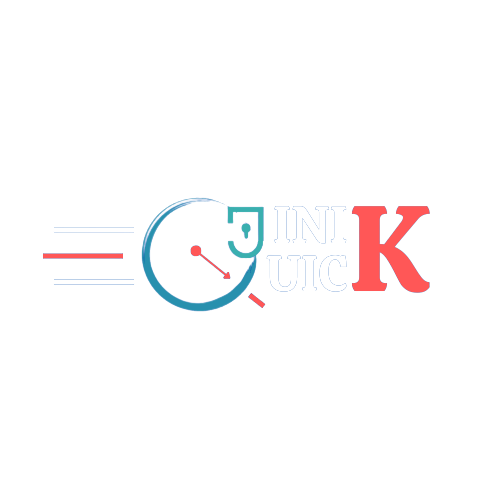

<!-- <div class="header">
    <mat-toolbar class="fixed-top toolbar-single-row">
        <div class="logo-icon">
            
        </div>
        <span class="jini-spacer"></span>
        <span class="login-span"><a (click)="scroll('contactUs')">Contact Us</a></span> 
         <span class="my-booking-span"><a>My Bookings</a></span> 
        <span class="login-span"><a [routerLink]="'/auth/login'"
                >Login/SignUp</a></span>
        <span> <button mat-icon-button class="example-icon favorite-icon" aria-label="Video Upload Icon">
            <mat-icon>video_call</mat-icon>
          </button></span>        
        <button mat-mini-fab [matMenuTriggerFor]="menu"
            
            style="background: url(assets/img/user-icon.svg)" color="warn" aria-label="Profile icon">
        </button>
        <mat-menu #menu="matMenu" xPosition="after">
            <button mat-menu-item [routerLink]="'/landing/accounts'">
                <mat-icon>account_circle</mat-icon>
                <span>Account</span>
            </button>
            <button mat-menu-item >
                <mat-icon>power_settings_new</mat-icon>
                <span>Logout</span>
            </button>
        </mat-menu>

    </mat-toolbar>
</div> -->
<div class="header">
    <mat-toolbar class="fixed-top toolbar-single-row">
        <mat-toolbar-row>
            <span>Video-Streaming-Platform</span>
            <!-- <span class="example-spacer"></span> -->
            <span class="jini-spacer"></span>
            <button mat-icon-button class="example-icon favorite-icon">
                <mat-icon> video_call </mat-icon>
            </button>
            <button mat-mini-fab [matMenuTriggerFor]="menu" *ngIf="isAuthenticated; else noAuth"
                
                style="background: url(assets/img/user-icon.svg)" color="warn" aria-label="Profile icon">
            </button>
            <mat-menu #menu="matMenu" xPosition="after" >
                <button mat-menu-item [routerLink]="'/landing/accounts'">
                    <mat-icon>account_circle</mat-icon>
                    <span>Account</span>
                </button>
                <button mat-menu-item >
                    <mat-icon>power_settings_new</mat-icon>
                    <span>Logout</span>
                </button>
            </mat-menu>
            <ng-template #noAuth>
                <button mat-raised-button (click)="login()">Login</button>
            </ng-template>
        </mat-toolbar-row>
    </mat-toolbar>

</div>
